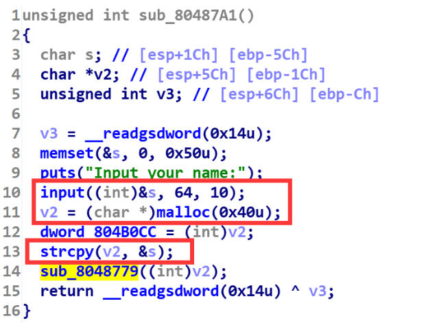

关于house of force的学习总结
house of force
介绍：
house of force是针对top chunk的一种手法，通过这种攻击手法，可以将top chunk更新到任意内存，再次申请堆块并写入数据，这就相当于任意地址任意写了。
原理：
在2.23和2.27的libc版本中，由于没有对top chunk的size合法性进行检查，因此如果我们能够控制top chunk的size位以及malloc在申请堆块时的大小不受限制，那么就可以完成该攻击。
先从malloc函数源码看起，如果malloc函数执行时发现没有任何的bins中的堆块能够满足需求，就会从top chunk中切下一块内存返回给malloc**(前提是top chunk能够有这么多内存供切割)**
victim = av->top;//获取当前top chunk的地址 |
漏洞的利用在这一行代码remainder = chunk_at_offset (victim, nb) 如果我们可以控制nb的值，其实就可以控制remainder的值了(remainder就是切割后的top chunk的地址)，这个手法最终的效果就是精准控制切割后top chunk的地址。
探究一下如何控制top_chunk的地址
下面我们深入分析一下上面那个式子，来探究一下如何精准控制top chunk的地址。
首先remainder = chunk_at_offset (victim, nb)等价于下面这个式子
victim+nb=top_chunk |
victim为切割前的top chunk header地址
nb为实际要申请的内存大小
top_chunk为切割后的top chunk header的地址
然后将nb和top_chunk再具体展开一下(解释在代码的下面)
nb=request_size+0x10 |
nb 也等于我们malloc时的内存大小(requset_size)，再加上一个0x10的chunk头
target_addr先假设是篡改top chunk后的地址
house of force的核心就是篡改top chunk的地址，而我们的数据自然是只能输入到用户区，因此我们需要让top chunk+0x10后才能保证target_addr是位于了篡改后chunk的用户区
将上面两部分整合一下，即为
victim+request_size+0x10=target_addr-0x10 |
最终整理一下为:
request_size=target_addr-0x20-victim |
叙述一下这个式子就是我们 所申请的内存大小等于想要将top chunk篡改到的地址减去top chunk原本的地址再减去0x20 （32位程序是-0x10，原理一样，只不过原本0x8的内存单元变成了0x4，所以最终的值减半）
house of force中对top chunk的size进行的检查
此时我们执行malloc(request_size)，就可以将top chunk更新到指定的地址了么?
不可以。别忘了存在一个检查
if ((unsigned long) (size) >= (unsigned long) (nb + MINSIZE))通常来说我们这个request_size是个负数，强转为无符号整数进行判断时，request_size肯定为一个超大的数值，如果top chunk本身的size是正常的话，必然无法满足这个要求，因此house of force的一个条件就是可以控制top chunk的size位(通常都是通过溢出的方式)，将其size设置为-1，-1是转换成无符号整数时，将变成最大的数字0xffffffffffffffff，无论request_size为多大都可以通过if检查了。
将top chunk的size改为0xffffffffffffffff后，再执行malloc(request_size)，即可将top chunk更新到我们指定的地址，然后再次malloc时即可将该内存申请出来，并写入数据。上述内容就是house of force的攻击过程了。
house of force手法总结
适用libc版本:2.23 2.27
使用前提:
1、申请堆块的大小不受限制
2、能够篡改top chunk的size位(主要是通过溢出的手段)
3、有top chunk原本的地址(这一条在特殊情况下，可以不具备)
4、有将top chunk更新后的目的地址(这一条在特殊情况下，可以不具备)
PS：特殊情况为：我们只需要top chunk的地址更新到堆区，这样我们只需要知道top chunk和目的地址二者的偏移即可。(因为本身其实算request_size的时候要的就是二者偏移)(相关题目可以看hitcontraining_bamboobox)
攻击效果：可以将top chunk更新到任意已知地址，再将新的堆块从top chunk中申请出来写入数据。就可以达到任意地址任意写的目的。
防御措施：对top chunk的size位进行检查，判断是否合法
题目练习
gyctf_2020_force
保护策略：
程序分析：

简单分析一下程序就会发现，这道题只有一个功能，就是add函数。
漏洞所在：
首先是malloc申请的内存大小无检查。
然后printf会打印出来申请的堆地址，最后就是不管malloc申请的内存多大，都可以输入0x50字节的内容，因此这里存在溢出(伪代码看的话这个*v0和*i没关系，但是看汇编的话就会发现这俩是一个东西，估计是转伪代码的时候出问题了吧)
大致思路：
因为这道题没有free函数，就一个add函数，因此很多手法都是失效了。但是因为这几个漏洞点正好符合house of force攻击的条件。所以就用house of force嘎嘎打了。
1、先申请一块超大内存，利用mmap映射后与libc基地址存在的固定偏移，来拿到libc基地址。
2、将top chunk的size位修改为-1
3、精心构造出申请chunk的大小，保证从top chunk中切下来后，让top chunk位于malloc_hook(其实应该位于realloc_hook上的，因为要用realloc来调整栈帧，不过这就是后话了)
4、申请堆块，将malloc_hook从top chunk中申请出来，然后写入one_gadget。
5、发现所有one_gadget都打不通，只能用realloc调整栈帧再打one_gadget
然后我主要提三个点做一下相关解释吧:
1、为什么其他师傅都申请的是0x200000大小的堆块？
2、精心构造chunk大小，让top chunk位于malloc_hook上，这个chunk大小是怎么算的？
3、最后realloc+4是怎么调试出来的?
1、为什么其他师傅都申请的是0x200000大小的堆块？
如果大家这里尝试过mmap映射内存大小是几万字节或者十几万字节的话，应该会发现，本地能打通，但是远程打不通这个情况。
导致了这个情况的原因是因为申请的堆块地址位于了ld中(请参考下图 )如果环境一样的情况下，libc和ld直接的固定偏移是可以直接用的，就是说你本地的环境如果和远程的环境一样的话(这个环境相同指的并不是libc相同)，你拿ld与libc的固定偏移，打远程也是ok的。但是如果本地和远程环境不一样，结果就是你本地用ld和libc的那个偏移能打通，但是到远程还用这个偏移拿到的就不是libc正确的基地址了。

经过我不断调试，发现当申请0x1FBFE9大小以上的时候，mmap映射的内存才会到libc区域。(最大是多少，我没有试)
所以说这里未必非要是申请0x200000大小的堆块，只要大于等于0x1fbfe9就行。这样申请出来的堆块地址就和libc基地址存在固定偏移了(如下图)

2、申请的size为多少，才能让top chunk位于malloc_hook上？
request_size=target_addr-0x20-victim |
直接套这个式子，解释在文章最开始。
都不用算出来，脚本直接这样写即可。

这里多减了0x10的原因是因为，我将top chunk的地址篡改为了realloc_hook-8的位置。因为要连着realloc_hook和malloc_hook一起修改了,调整栈帧打one_gadget。
3、realloc+4是怎么调试出来的?
这个咋调试的话，本文就不具体说明了。主要会的师傅不需要解释，不会的师傅需要仔细解释说明。所以需要弄懂realloc+4咋调试出来的师傅 可以看我这篇文章 仔细看完之后，保证嘎嘎会。如果对我写的哪里有疑问，可以一起交流一下。
EXP:
from tools import * |

bcloud_bctf_2016
保护策略：

漏洞所在：
堆地址的泄露

这里乍一看malloc(0x40),input 0x40的数据似乎不存在溢出，但因为strcpy函数的存在，所以这里的溢出是必然的。我们直接将0x40个数据输满，然后调一下(如下图)。

(上图是即将拷贝，之前strcpy函数前的栈空间)strcpy函数会将红色框部分的数据以及一个\x00全部拷贝到刚申请的0x40的堆块中，会发现此时拷贝的数据溢出了末尾的堆地址以及一个\x00。溢出原因是因为strcpy函数遇到\x00或者\x0a才会停止，而输入的数据将原本栈中的\x00给覆盖掉了，就导致多拷贝了一个地址，然后拷贝结束strcpy函数会加上一个\x00。
下图为拷贝后的堆布局，可以发现拷贝后造成了溢出。
接下来再执行printf函数的时候就将这个溢出的堆地址泄露出来了。

strcpy导致堆溢出
有了上面的溢出情况后，我们如法炮制，在这里依旧将两次的输入写满，看看会不会也出现溢出的情况
观察下图发现，确实又发生了溢出，而溢出的原因与上面堆地址泄露那个溢出原因一样，也是因为栈里没有出现\x00将strcpy函数截断，导致strcpy拷贝时发生了溢出。

这就说明我们可以现在可以控制top chunk的大小，知道top chunk的地址，malloc申请堆块大小时不受限制，因此选择house of force attack。
大致思路：
1、利用strcpy函数的溢出配合%s来泄露堆地址，再利用strcpy函数溢出来修改top chunk的size为0xffffffff。
2、利用house of force将top chunk位置改到bss段指针数组的位置
3、篡改bss段存储chunk地址的指针数组为free的got地址和puts的got地址
4、用edit将free的got表改为puts的plt表
5、free存储在bss段上的puts的got地址，由此来泄露libc地址
6、将free的got地址改为system地址，然后free掉存有/bin/sh字符串的地址即可获取shell
篡改free got表的一个坑
整体利用过程还是比较简单的，就不再赘述了。主要记录一下篡改free函数got表时的一个坑。
由于此时我们已经将top chunk的地址进行了修改，而此时top chunk的size为
上图的这个size不是固定不变的，跟top chunk的地址有关系，不过这个size肯定是一个负数(这里展示的是补码)
这个size记录的是 id为0的chunk大小。
然后在edit函数里面有一个检查(如下)
i初始值为0，但是a2(就是size)为负数，也就是说这里我们的数据是写不进去的。
所以我们需要将函数的got地址布置到id为0之后的chunk地址才行，否则无法对其进行编辑。
EXP：
from tools import * |
hitcontraining_bamboobox
这里我只记录用house of force的攻击手法，如果想打远程的话，要用unlink来打。
保护策略：
漏洞所在：
存在一个后门函数
然后存在v3里存了两个函数指针，然后如果选择5的话，会执行其中的函数指针。

malloc申请的时候，对size(也就是v2)没有进行检查

然后edit函数中，对size没有进行检查，因此这里存在堆溢出。
大致思路：
通常来说，能利用这几点的话，是打不了house of force的，因为没有top chunk的地址。但是这道题比较特殊的是我们只需要将top chunk放到函数指针的堆块即可。而top chunk和该堆块是存在固定的偏移的，也就是request_size=target_addr-0x20-victim中的target_addr-victim的值我们是知道的。因此并不需要知道top chunk的地址也可以完成house of force攻击。
1、申请一个堆块，然后利用edit中的溢出，修改top chunk的size位为0xffffffffffffffff
2、然后看一下top chunk和存在函数指针的那个chunk的偏移(如下图)

然后再减去0x20，最后得到偏移为0x60
3、将top chunk更新到指针堆块的位置。
4、将指针堆块申请出来，写入后门地址即可。
EXP：
from tools import * |
远程用unlink打，我这里仅仅是通过这道题来演示house of force